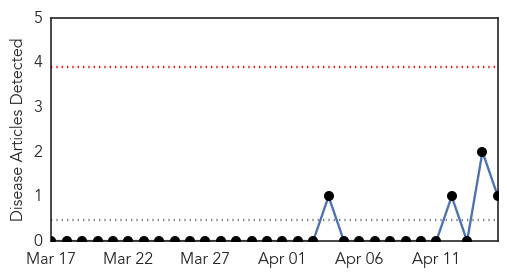
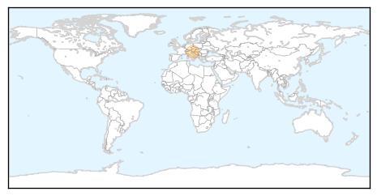
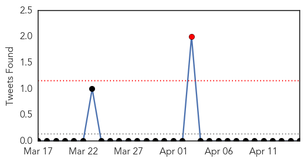
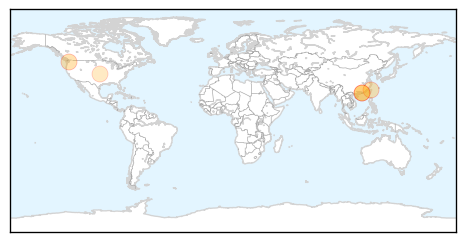

West Nile Virus
30-Day Web Trend
0 alerts, 0 warnings

30-Day Twitter Trend
0 alerts, 0 warnings

Article Locations
Article Confidences

Top Articles:
Top Tweets:
-
No tweets found for Apr 15, 2014
Influenza
30-Day Web Trend
1 alerts, 0 warnings

30-Day Twitter Trend
0 alerts, 0 warnings

Article Locations
Article Confidences

Top Articles:
- 0.990
- Another Confirmed Case Of Bird Flu In Hong Kong
- 0.918
- Flu Scan for Apr 15, 2014
- 0.915
- NIAID Awards $5.3 Million to Seattle Children’s Research Institute in Conjunction with Micronics for Development of Global Surveillance of Influenza Strains at Point-of-Care
- 0.898
- H7N9 surveillance eases as risk reduces
- 0.689
- Scientists Publish Recipe For Making Bird Flu More Contagious
Top Tweets:
-
No tweets found for Apr 15, 2014